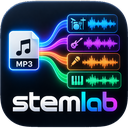

StemLab
Separazione degli stem sul tuo computer
Trascina qui un brano
oppure clicca per scegliere un file: mp3, wav, flac o m4a

Separazione degli stem sul tuo computer
oppure clicca per scegliere un file: mp3, wav, flac o m4a